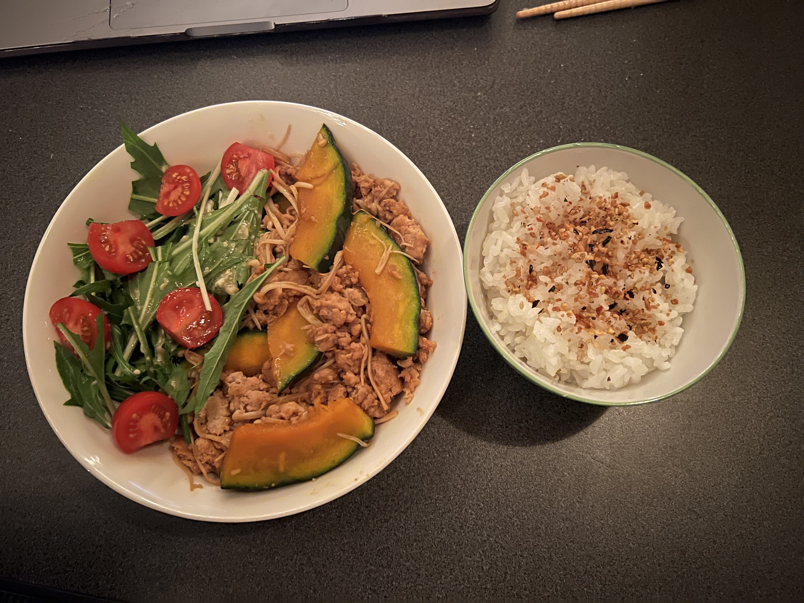

Kabocha Soboro Itame

What is it?
Kabocha is a member of the squash family, famous for its sweet taste and health benefits.Soboro
in Japanese refers to ground meat, while itame means "stir-fry". Sweet and a bit spicy thanks to the gochujang,
this mouth-watering okazu (side dish) is a great component to any dinner or bento box. Best of all, it comes
together in just under 30 minutes!
What You'll Need
- 300 Grams Kabocha Squash
- 200 Grams Ground Meat of Choice
- 1 Clove Garlic
- 1 Tablespoon Cooking Sake
- 1 Tablespoon Soy sauce
- 2 Teaspoons Oyster Sauce
- 1 Teaspoon Gochujang
- 1 Teaspoon Sugar
Instructions
- Combine cooking sake, soy sauce, oyster sauce, gochujang, and sugar in a small bowl and mix well.
- Heat up neutral oil in a pan and add garlic. Stir fry until fragrant, about one minute.
- Add ground meat to the garlic and oil, stirfrying until no longer pink
- Add kabocha and stir fry with pork mixture for about a minute
- Cover everything with a lid, and let it simmer on a low heat for 10 minutes
- After 10 minutes, add the sauce. Increase the heat, and fry for 2-3 more minutes
- Serve with a side of rice and enjoy!